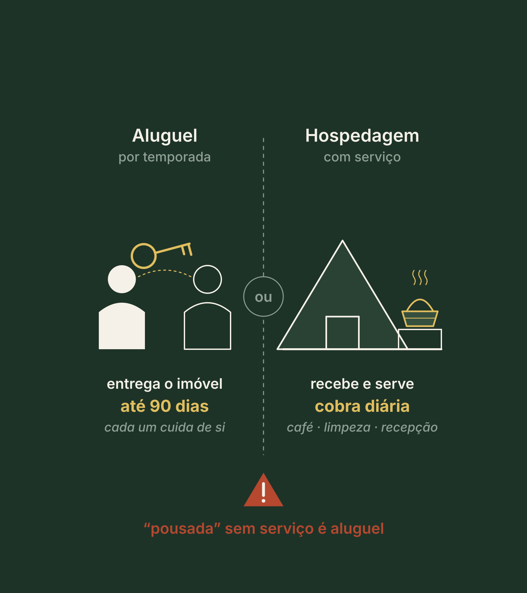

Renda, venda ou os dois. Como o seu projeto ganha dinheiro.
Antes de construir
Para quem vamos vender?
A pergunta do Pilar 4
Qual é o melhor caminho? Qual estratégia?
Esta aula em três respostas
O que, por quê e o que você leva
1
O que
O mapa de todos os modelos, a estrutura da renda e a estrutura da venda, com a primeira conta de cada um.
2
Por quê
O modelo muda quando o dinheiro volta, quanto capital existe antes e que obrigação você assume.
3
Resultado
A página 4 do seu Dossiê, O Modelo de Negócio: renda, venda ou híbrido, com a conta feita.
Revisite · sem voltar às páginas
Três perguntas do Pilar 3
Quais são as três partes da frase do conceito?
Clique para virar
Resposta
O que se vive, para quem e por que só aqui.
Que nível do que se vende sustenta diária no topo da faixa?
Clique para virar
Resposta
A experiência, com momentos projetados.
A hipótese de preço da Marina, cerca de R$ 716, já é promessa?
Clique para virar
Resposta
Não: é hipótese até o anúncio e a reserva responderem. Hoje a conta usa a diária média da região, R$ 645.
Bloco 1
Em que negócio você está, e o mapa inteiro
CuriosidadeCom o glamping, nós gastamos muito menos, operamos mais e hospedamos mais do que na pousada e no hotel tradicional.
ReflexãoVocê escolheu o seu modelo pelo que é fácil construir, ou por quem vai comprar?
DicaLeia cada modelo duas vezes: do balcão para dentro e do balcão para fora.
A pergunta deste pilar
Como esse projeto ganha dinheiro?
Renda: hospedar e receber pela diária. O dinheiro volta aos poucos.
Venda: construir para vender as unidades. Volta mais cedo, com obrigação.
Três coisas diferentes
Alugar, hospedar ou vender
Alugar: entrega o imóvel por até 90 dias, e quem aluga cuida de si.
Hospedar: recebe a pessoa, com serviço, e cobra diária.
Vender: passa o imóvel, ou o tempo de uso dele, a outra pessoa.
O teste: tem café, limpeza durante a estadia ou alguém para receber? Então você hospeda.

Quiz relâmpago · 1 de 2
Um chalé alugado no fim de semana, sem café, sem limpeza durante a estadia e sem ninguém para receber, é o quê?
Quem só entrega o imóvel, sem serviço, não hospeda: aluga. Isso muda a conta, a regra e a operação. Se amanhã entrar uma cesta de café, a conversa com o contador muda.
Renda ou venda · clique em cada um
O que o modelo muda
Quando o dinheiro volta
Renda ou venda?
Na renda · na venda
Aos poucos, diária por diária. Na venda, mais cedo, venda por venda.
Quanto capital existe antes
Renda ou venda?
Na renda · na venda
A obra da fase um e o fôlego até a operação andar. Na venda: projeto, aprovações, registro e a estrutura de venda.
Que obrigação você assume
Renda ou venda?
Na renda · na venda
Com o hóspede, a cada estadia. Na venda, com quem comprou, por muitos anos.
Primeiro nasce o negócio. Depois nasce o investimento.
Não existe modelo melhor nem pior
Do balcão para dentro, do balcão para fora
Do balcão para dentro
O lado do dono: o que construir, quanto capital, quanto trabalho de operar e quanto tempo até o primeiro hóspede.
Do balcão para fora
O lado do cliente: quem compra, o que ele quer hoje e por que escolheria o seu lugar.
O que é fácil para você é do balcão para dentro. O que vende é do balcão para fora.
O mapa · lado da renda · você fica com o imóvel
Os modelos de renda, do mais leve ao mais pesado
Clique em cada modelo: as duas leituras, dentro e fora.
O mapa · lado da venda · você constrói e vende
Os modelos de venda, do simples ao regulado
Todos vendem algo construído, ou o direito de usar algo construído.
Quiz relâmpago · 2 de 2
Um dono escolhe a multipropriedade porque "é a que mais soma VGV". De que lado do balcão ele está olhando?
O número bonito é do balcão para dentro. Do balcão para fora, a pergunta é quem vai comprar cada fração, o que quer e por que escolheria o seu lugar.
O mapa · os novos modelos · onde a Zion também está
Menos uma cama, mais o que a pessoa vive
Clique em cada um. Em saúde, quem confirma é o profissional e o órgão competente.
Por que esses modelos chamam atenção
A economia da atenção
Todo mundo disputa a atenção das pessoas, a cada rolagem de tela.
Na nossa leitura, natureza, experiência e bem-estar estão no desejo das novas gerações.
Por isso tendem a ser mais fáceis de comunicar e de vender.
Tende, não garante. A conta continua valendo.
A segunda lente · leitura qualitativa, sem números
Dá lucro ou dá trabalho? E no tempo?
Clique num modelo. Depois, a pergunta: compensa ou não compensa?
A regra que muita gente esquece
Glamping não é propriedade. É barraca. Uma barraca de luxo.
Desburocratiza: menos obra, menos capital, mais rapidez. As licenças dependem do município.
Serve para renda e para testar o destino. Não se vende como imóvel.
Quando a conversa é propriedade, a conversa é construção.
Se não existe modelo melhor, existe ordem melhor
A estratégia para começar e para terminar
Cada fase só começa com os números da anterior.
O seu hóspede de hoje pode ser o comprador de amanhã. Pode ser, não vai ser.
O mapa aplicado · ponto de partida, não receita
Qual modelo combina com o seu caso?
Peça no chat: qual é o seu perfil? Clique nele.
Antes do bloco 2 · 5 minutos
O meu lugar no mapa
1Escreva em que negócio você está: alugo, hospedo ou vendo, e por quê.
2Marque o seu perfil e o modelo por onde você começa.
3As duas leituras: o que construir e operar; quem compra e por quê.
4Onde você gostaria de terminar, e em quantas fases.
5:00
Se a resposta do passo 3 for "eu acho que alguém vai querer", você ainda está do balcão para dentro.
Bloco 2
A renda, a venda e a sua decisão
CuriosidadeNo começo da multipropriedade no Brasil, vender chegou a custar cerca de 30% do VGV, segundo levantamento publicado pela Panrotas.
ReflexãoO seu projeto fica de pé no cenário mais fraco, ou só no mês mais cheio?
DicaComece no tamanho que você consegue fazer bem, prove o negócio e suba depois.
Nem todo produto de renda dá o mesmo trabalho
A escada de três degraus
Cada degrau acima pede mais equipe, licença, capital e tempo.
A fruta baixa, que você alcança sem escada, quase sempre está no degrau fácil.
Exemplo ilustrativo · resolvido passo a passo
A conta do cem por cento
1 · O cem por cento · 3 cabanas × 365 noites1.095 noites
2 · As noites vendidas · 1.095 × 38,5%cerca de 422
3 · × a diária média da região, R$ 645R$ 271.916
Receita bruta da Marina no anocerca de R$ 272 mil
Receita bruta é tudo o que entra, antes das contas. Não é lucro e não é retorno.
Ao vivo · equalize a renda
Exemplo ilustrativo · não é promessa
Unidades × 365 × ocupação × diária
O cem por cento
Noites vendidas no ano
Receita bruta no ano
Por unidade
Por mês, em média
Antes de custos fixos, variáveis, impostos e comissões.
Ajustado ao vivo
Ao vivo · nunca faça um número só
Exemplo ilustrativo · não é promessa
Três cenários. Você confia no mais fraco.
Ajustado ao vivo
Só fins de semana
Noites vendidasReceita bruta
O número em que você confia
Com feriados
Noites vendidasReceita bruta
Só com prova no calendário
Procura forte
Noites vendidasReceita bruta
Teto de conversa, não meta
O que ainda sai da receita · clique em cada um
Receita bruta não é lucro
Custos fixos
Exemplos
O que é
O que você paga todo mês, cheio ou vazio: salário, energia mínima, internet, manutenção.
Custos variáveis
Exemplos
O que é
O que só existe quando alguém se hospeda: lavanderia, cesta do café, comissão do aplicativo.
Custo de cada noite vendida
Exemplos
O que é
O variável dividido pelas noites: quanto custa, de verdade, cada noite que entra.
Ocupação é vaidade. Margem é sobrevivência.
Quiz relâmpago · 1 de 2
Em julho, as cabanas de um vizinho ficaram 64% ocupadas. Que ocupação você usa na conta do ano?
O mês mais cheio engana. No exemplo da Marina, usar o mês mais cheio daria cerca de 66% a mais do que o ano entrega.
No modelo de renda, alguém opera todos os dias
Quem opera a fase um?
1
Você
Pede tempo em noite, fim de semana e feriado, que é quando o hóspede está lá.
2
Uma pessoa contratada
Pede a rotina escrita, para que outra pessoa consiga repetir.
3
Uma empresa de gestão
Pede proposta por escrito, com o que ela faz e quanto cobra.
Exemplo ilustrativo A Marina opera com uma pessoa local, com a rotina escrita. Ela fica com o preço e o produto.
Antes da venda · 5 minutos
A sua conta do cem por cento
1O seu degrau na fase um, e o item que empurra o produto para cima.
2O seu cem por cento: unidades × 365.
3Os três cenários, com a diária média que você mediu no Pilar 2.
4O número em que você confia, e quem opera a fase um.
5:00
Não mediu ainda? Escreva "não sei": a conta espera, e o "não sei" vira tarefa.
Como estruturar um projeto para vender · nível introdutório
Os seis passos, nesta ordem
Cada clique abre o próximo passo, com o porquê.
Passo 2 · a escada das formas de vender · clique em cada uma
Da mais simples à mais complicada
Venda por unidade
O que pede
Lei 4.591/1964
Cada comprador leva uma unidade inteira. Na planta, só depois do registro da incorporação no cartório.
Multipropriedade
O que pede
Lei 13.777/2018
Cotas de tempo de uma mesma unidade, de no mínimo sete dias, cada uma com matrícula própria.
Timeshare
O que pede
Decreto 7.381/2010
O direito de usar por um tempo, por contrato. Quem compra tem o uso, não a propriedade.
Condo-hotel
O que pede
Resolução CVM 86/2022
A unidade e parte do resultado do hotel. Oferta pública passa pela CVM: registro, prospecto e estudo de viabilidade.
Qual cabe no seu caso, e como, quem confirma é o advogado e o contador.
Ao vivo · passo 3 · a conta da venda
Exemplo ilustrativo · não é a Marina
VGV, menos o custo de vender, antes da obra
O que se vende
VGV, se tudo for vendido
Custo de vender
Antes da obra e do terreno
Ajustado ao vivo
Quiz relâmpago · 2 de 2
O VGV de um projeto deu R$ 3,5 milhões. Quanto o dono ganha?
VGV é o preço de tabela de tudo, se tudo for vendido. O que o projeto entrega é o que sobra depois da obra inteira e do custo de vender.
Ao vivo · multipropriedade em linguagem de padaria
Exemplo ilustrativo · não é avaliação
Como o comprador enxerga a fração
Economia de hospedagem no ano
Preço ilustrativo da fração
Frações no total
VGV teórico
Custo de vender
Antes da obra e de todos os custos
Ajustado ao vivo
204 frações são 204 contratos
O difícil não é construir. É vender.
Quem são os compradores?
Existe demanda real na região?
Qual é o perfil financeiro desse público?
Como os compradores serão alcançados?
Quanto vai custar conquistar cada comprador?
Qual é a capacidade comercial necessária?
Como serão tratados cancelamentos e desistências?
Mais de duas em "não sei"? A multipropriedade não é a sua fase um.
A decisão · três caminhos
Renda, venda ou híbrido
Cada clique abre um caminho: o que é e quando faz sentido.
Quem vende com doze meses de números reais vende um negócio, não uma promessa.
Exemplo ilustrativo · o Modelo de Negócio da Marina
A página 4 da Marina, linha a linha
Alugar, hospedar ou vender
Hospedar: tem serviço, o café na cesta
No mapa e o degrau
Glamping, renda, degrau fácil: a Fase 1, testar
O cem por cento
3 × 365 = 1.095 noites
Os três cenários
Cerca de R$ 272 mil, R$ 353 mil e R$ 459 mil de receita bruta
O número em que confia
Cerca de R$ 272 mil, o do cenário mais fraco
Quem opera a fase um
Uma pessoa local, com a rotina escrita
Venda e multipropriedade
Não na fase um. Checklist guardado, duas linhas em "não sei"
Veredito
Avança com renda, no degrau fácil, para o masterplan do Pilar 5
Ao vivo · o modelo inteiro em uma tela
Exemplo ilustrativo · não é promessa
Renda · você fica com o imóvel
O cem por cento
Com feriados · procura forte ·
O número em que você confia
Venda · você constrói e vende
VGV, se tudo for vendido
Antes da obra inteira
Ajustado ao vivo
Revisão · responda de cabeça
Quatro cabanas. Qual é o cem por cento?
4 × 365 = 1.460 noites: todas as noites que existem no ano. A ocupação entra depois.
Revisão · responda de cabeça
Qual é o melhor modelo de hospedagem?
Não existe modelo melhor nem pior. Existe o modelo adaptado ao seu caso, e a ordem certa para passar de um ao outro.
Faça agora · a página 4 do seu Dossiê
O seu Modelo de Negócio
1Responda. Uma pergunta por tela: o negócio, o lugar no mapa, o degrau, o cem por cento e quem opera. Se pensa em vender: o vendável, a forma e o VGV.
2Equalize no simulador e veja os sinais vermelhos de cada forma de vender.
3Baixe o seu PDF e guarde na pasta "Meu Dossiê".
10:00
Na área de membros: aula "Faça agora · O seu Modelo de Negócio"
O Pilar 4 em uma tela
O que ficou
Alugar, hospedar e vender são três coisas diferentes. Tem serviço, você hospeda.
Não existe modelo melhor. Leia cada um do balcão para dentro e do balcão para fora.
Glamping não é propriedade: serve para renda e para testar o destino.
A fruta baixa costuma estar no degrau fácil. Cem por cento × ocupação × diária, em três cenários: confie no mais fraco.
Venda em seis passos. VGV menos a obra e o custo de vender; e o difícil é vender.
Renda, venda ou híbrido: primeiro nasce o negócio, depois nasce o investimento.
Próximo · Pilar 5
Masterplan faseado
O terreno inteiro no papel: onde você nunca vai construir, o que cabe de verdade, quanto é vendável e o que entra na fase um. Um projeto assim é o que um sócio, um banco ou a Zion conseguem avaliar. E a Zion avalia cada caso.
Conteúdo educacional. A Marina, o projeto de dez cabanas e o exemplo de quatro cabanas em multipropriedade são exemplos ilustrativos, e as contas são ilustrativas. Receita bruta e VGV não são lucro. Não é oferta de investimento nem avaliação imobiliária, e não é promessa de renda, retorno, ocupação, venda, crédito ou sociedade. Temas jurídicos em nível introdutório: quem confirma é o advogado, o contador, o cartório e a prefeitura.